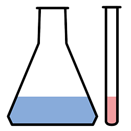

---
---
<!DOCTYPE html>
<html>
<head>
<title>Test for Image</title>
{% include UI %}
</head>
<body>
</img>
</body>
<div data-role="dialog" id="dialog_pic" class="padding20" data-close-button="true" data-overlay="true" data-overlay-click-close="true" width="50%" height="50%">
</img>
</div>
<script>
//设置窗口大小
var dlg_=document.getElementById("dialog_pic");
dlg_["data-width"]=document.body.clientWidth;
dlg_["data-height"]=document.body.clientHeight;
    
//绑定响应事件
var a=document.getElementsByTagName("img");
for(i in a)
    if(a[i].src!=undefined)
        a[i].onclick=function showImage(){
            if(this==undefined || this.src==undefined) //筛选无效图片
                return;
            document.getElementById("dlg_img").src=this.src;//加载图片
            var dlg=$("#dialog_pic").data('dialog');
            dlg.open();//加载窗口
        }
</script>
</html>
